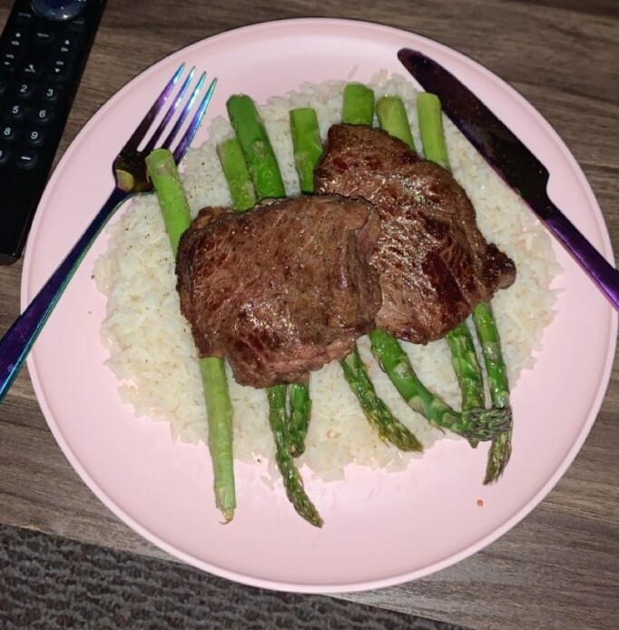

I would like to start off by offering a few tips and tricks that I have taken with me through my cooking journey. I have so much to learn still, and I am still only cooking by myself in my college apartment, yet I do believe I have valuable tips!
In a pinch, I believe that pre-cooked meals from Trader Joes are a life saver. They carry their own brand of multiple items, however, I would not shop here for weekly grocery needs.
Looking at weekly circulars and becoming a preferred shopper/getting a membership to grocery stores in your area is a great way to save money. For example, I try not to buy too much red meat unless it is on sale, and then I will get a bunch to freeze for when I want to use it.
Sauces are perfectly fine bottled and in glasses. Unless I am planning an exquisite dinner for my roommates, my college budget does not call for much more than market-brand sauces and dressings. Also, vegetables go amazing on pasta.
Meal prep anything. If I have time to make pasta or rice as a part of my dinner, I will make a ton to save in Tupperware for my next meal. Between classes and work I do not always have time to boil water. A watched bot never boils.
Air Fryers, Blenders, and Microwave ovens open so much possibility for quick and easy meals.
Breakfast is incredibly important. I finally got off my practice of having a large cup of hot black coffee every morning. Ill get up a bit earlier than normal just to scramble some eggs; it feels amazing.
My Favorite Recipe
I want to share one of my favorite recipes of all time to make on a college budget. Steak and asparagus over rice. My boyfriend and I make this meal every time we get to see each other, and I have brought it to my life at school. This recipe is super quick and easy.
Rating:

Serving Size:1 hungry college student
Ingredients:
Preheat the oven to 450 degrees
Bring one cup of water to a boil, when boiling pour 1 cup of rice in, cool the burner down to a simmer and let sit until the rice has absorbed all of the water
Cover your asparagus in olive oil, then generously coat them in salt and pepper, followed by a sprinkling of parmesan cheese, onion powder, and garlic powder
When at 450, put the asparagus on an oven safe tray and into the oven for 12 minutes or until a golden-brown crust has begun to form
Heat a pan on oven-setting 5/6 (medium heat) until hot. Put 1 tablespoon of butter onto the pan until melted.
Once melted, place the sirloin onto the pan, sprinkle with salt and pepper, and let sit for 6/7 minutes depending on how red you enjoy the, middle, then flip and do the same for the other side.
If you are using the steak tips, sprinkle with salt and pepper and keep the tips active on the pan as they turn brown. After about 6/7 minutes the tips should be cooked thoroughly.
Once done, add another tablespoon of butter to the pan and begin to spoon the butter of the steak for a minute or two, allowing the steak to absorb some of the butter.
Once the rice has absorbed all of the water, add butter and salt to taste and put into a bowl.
Once the asparagus are ready, sprinkle with either fresh lemon juice or store brought and lay them over the rice.
Then, lay the finished beef sirloin over the rice and asparagus, add salt and pepper to taste.